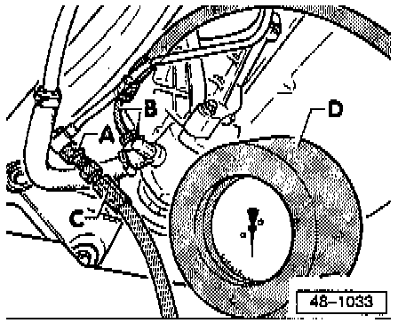

Steering: Testing and Inspection
Test Requirements^ Power steering pump belt and tension OK.
^ System not leaking.
^ Hoses / lines not kinked or restricted.
Checking
1. Disconnect pressure line from the pump.

2. Install adapter and gauge (valve in open position).
A - Line adapter Tool No. US 1074/4A, or equivalent.
B - Line adapter Tool No. VW 1402/1 A, or equivalent.
C - Hose from adapter set tool No. 1402/6, or equivalent.
D - Gauge tool No. US 1074B, or equivalent.
3. Start engine and if necessary add fluid to reservoir.
4. With engine idling, close valve of gauge (not longer than 5 seconds) and check pressure.
- Specification: 85-95 bar (1233-1378 psi)
NOTE:
- If the pressure reading is higher or lower than specified, replace pump. Service and Repair
- If fluid in reservoir is low always check the steering system for leaks.
- If leaking at pinion first check the hose/line connections for leaks and if necessary tighten and wipe dry.
- For leaks at pinion seal or the rack seals in steering gear housing replace the steering gear.
- To check the rack seals loosen hose clamp on boot and push boot back.